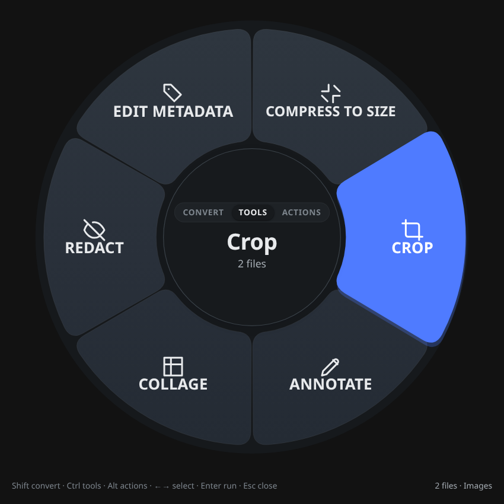
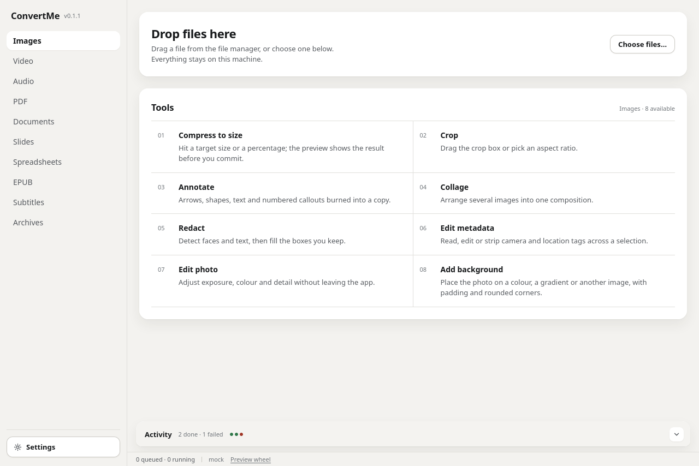
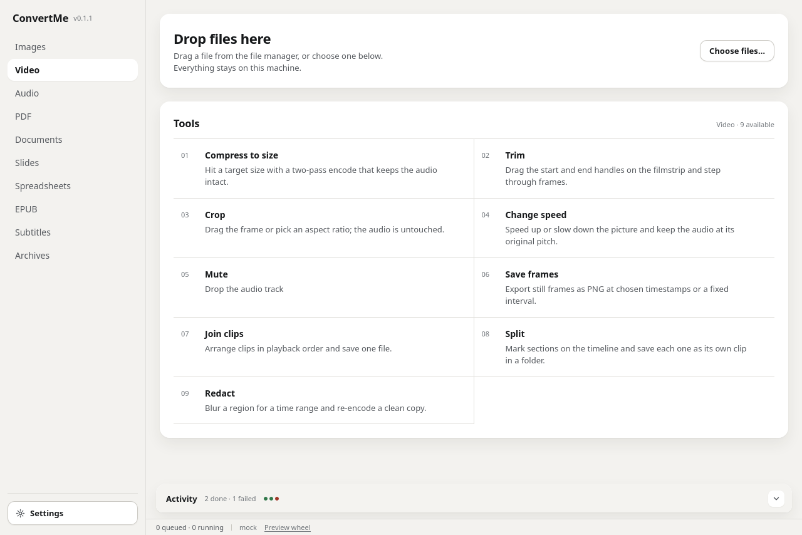
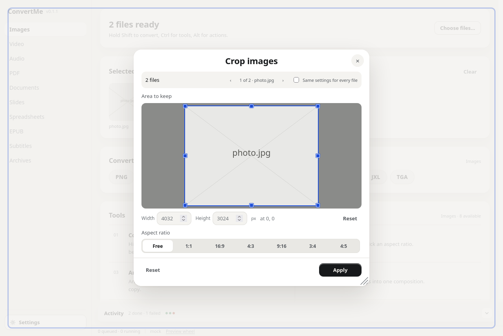
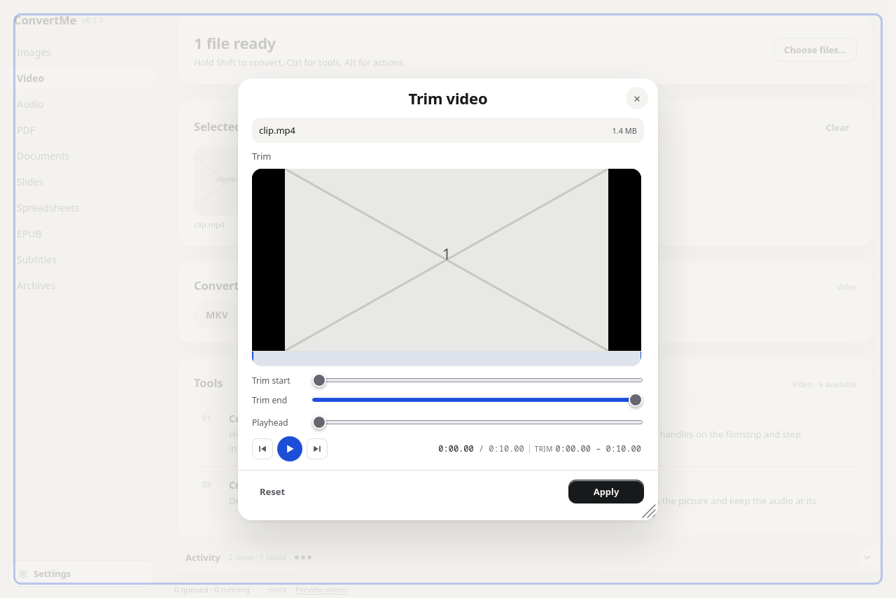
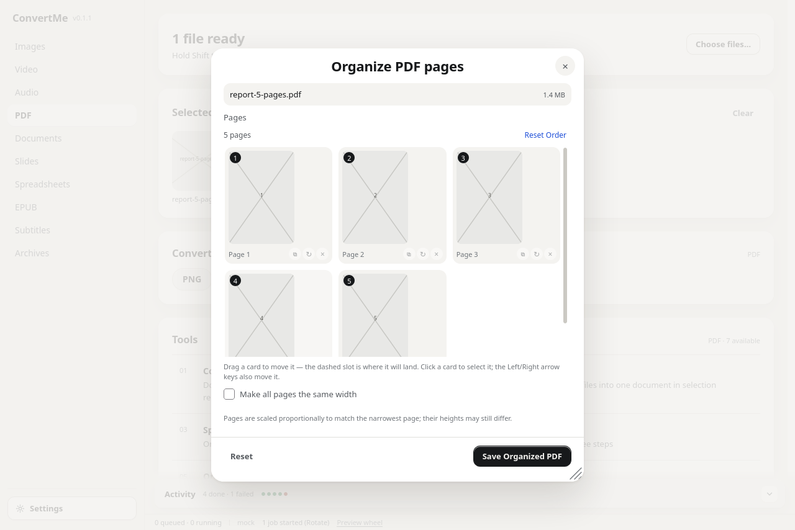
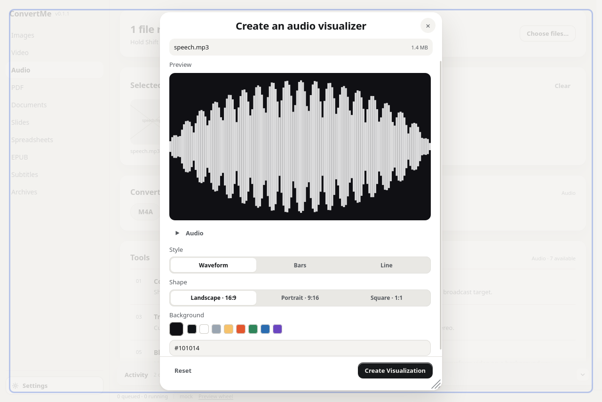

A file converter that fits under your pointer.
Drag files, hold a key, and a wheel of targets and tools opens at the cursor. Nothing is uploaded. A source file is never modified — every job writes a new file next to it.

Three rings, one gesture
The centre of the wheel always names what is selected and how many files are in the job, so the ring never asks you to remember what you dragged.
Convert
The formats the selection can actually become, with the ones your installed converters cannot write removed rather than shown dead.
Tools
Crop, trim, redact, compress to a target size, merge, join, strip metadata — each opens one dialog sheet over the page you came from.
Actions
Reveal, open, copy path, move to trash. The file-manager chores that are three right-clicks away everywhere else.
What it looks like
Screenshots are produced by scripts/ui-shots.py: the built
front end in headless Firefox against the development mock. The components and the
layout are real; the file data is fixture data.






What is on the wheel
311 conversion targets across ten categories and 33 file tools, driven by
the converters you already have installed. convertme probe prints the
exact set your machine can run.
| Category | Tools |
|---|---|
| Images | Compress to size, Crop, Annotate, Collage, Add background, Edit photo, Edit metadata, Redact |
| Video | Compress to size, Trim, Crop, Change speed, Mute, Save frames, Join clips, Split, Redact |
| Audio | Compress, Normalize, Trim, Channels, Visualize, Bleep, Edit metadata |
| Compress, Organize pages, Edit metadata, Merge, Split pages, Save pages as images, Extract text | |
| Documents | Merge |
| Archives | Extract |
| Slides, Spreadsheets, EPUB, Subtitles | Conversion targets rather than tools |
Rules the code keeps
These are enforced by tests, not by convention.
Sources are read-only
Engines that mutate by nature — crop, trim, redact, metadata, bleep, organize — run on a staged copy. The queue publishes the artifact, never the engine.
Publish is atomic
Work happens in a temp directory and is renamed into place. A cancel, a crash or a full disk leaves the folder untouched.
No shell strings
Every external tool gets an argv array, so spaces, quotes, newlines and emoji in filenames are ordinary input.
Local only
No account, no telemetry, no metering. The only network call the app can make is the optional update check.
The same pipeline, from a terminal
The CLI is not a second implementation — it plans and runs the same jobs as the wheel, and Activity records the argv it used.
convertme convert photo.jpg --to webp
convertme tool clip.mp4 --tool trim --params '{"start":1.5,"end":9}'
convertme probe # what is installed, and what it enables
convertme history --limit 20 # what ran, with the argv that ran itFlags are parsed strictly: an unknown or misspelled flag is an error with the usage, never a silently skipped word.
Build from source
Rust 1.99 and Node 22 are pinned by the toolchain files. The window is Tauri, so the front end must be bundled before the crate compiles.
npm --prefix ui ci
npm --prefix ui run build
cargo xtask gen-conf
cargo build --release -p convertme-gui --bin convertme
./target/release/convertme
./target/release/convertme probeSystem libraries on Debian/Ubuntu:
sudo apt-get install libwebkit2gtk-4.1-dev libgtk-3-dev libsoup-3.0-dev \
libxdo-dev libssl-dev pkg-configConversion shells out to whatever is installed: FFmpeg, ImageMagick, Ghostscript, qpdf, Poppler, Pandoc, LibreOffice, 7-Zip, Tesseract. Install only the tools for the formats you care about — the wheel hides what is missing.